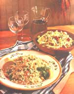
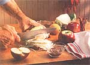

NATURAL KITCHEN
It's high time we had some tasty salad options during the winter months.
It's depressing. That's the only way to describe preparing salads in the dead of winter. Handling limp lettuce, crunchless carrots, and soggy celery just adds to the overbearing bleakness that hits many of us midwinter. Desperately we long for a little crunch, flavor-anything-in our greens. For those of us who aren't growing our own winter gardens in solar greenhouses, crisp, flavorful veggies can be pretty hard to find north of the Mason Dixon line. Even our pet rabbit turns up her nose at the sight of February's pathetic produce. It's no wonder people attempt to liven their salads by smothering them with heaps of oily or creamy dressings.
Some of you may consider rebelling by beginning a salad fast until June, when you can start harvesting the veggies from your outdoor garden again. Be warned, rebelling isn't such a hot idea. Winter is typically the meat-and-potato season, when we crave stick-to-your-ribs type foods (logical since our bodies need extra fuel to equip us for winter weather). But because cooking breaks down the fiber in our food, meat and potatoes are sorely lacking in fiber and other nutrients that are found only in fresh produce. Of all the times to skimp on nutrition, the cold and flu season may be the worst of all.
Fiber has another important quality during the winter months. It helps us control the extra weight that inevitably sneaks up on so many of us. Because raw produce has more bulls than cooked produce, you don't have to eat as much of it to feel full. As it is digested, the fiber takes with it waste calories that otherwise hang around waiting to metabolize as fat. Therefore salad skimping is one sacrifice you want to avoid. Because flying off to tropical veggie-rich climates in February may not be feasible financially, we need to start getting creative with seasonal fruits and vegetables.
*2 cups couscous (1 use whole wheat instead of white couscous )
1 1/2 cups chicken or vegetable broth cup frozen peas, defrosted
1 teaspoon ground cumin teaspoon ground coriander teaspoon cinnamon
1 tablespoon lemon juice dash of salt and cayenne pepper
1 15-ounce can garbanzo beans, rinsed 3 green onions cup chopped fresh herbs: cilantro, mint (use parsley if the other two are unavailable)
4 radishes, chopped (optional)
Spicy Hot Harissa Sauce
1 large clove garlic
2 jalapeno peppers, stems and seeds removed (for a milder sauce, try 1 jalapeno and 1/2 roasted poblano pepper with skin removed)
1/4 cup olive oil cup lemon juice
1/2 teaspoon grated orange rind
1/4teaspoon salt
1/8 teaspoon caraway seeds
Bring broth to a boil. Put couscous in large bowl or pan with a lid. Pour broth over couscous, cover, and let sit for 15 minutes. Fluff with fork and add peas and spices. Stir in rest of salad ingredients.
WINTER SLAW: For a change of pace this winter, turn cabbage and apples into crispy coleslaw.
In blender, mix dressing well, and store in separate container. Before serving, shake dressing and then drizzle over couscous.
*Couscous is an African pasta dish made from wheat. It can be found with Mediterranean foods in supermarkets.
Orange Watercress Salad
1 bunch watercress, washed and trimmed, or fresh spinach, chopped
2 navel oranges
1 daikon radish (about 3/4 cup cut into matchstick-size pieces)
2 teaspoons toasted sesame seeds
Dressing
1 tablespoon sesame or canola oil
1 teaspoon grated orange rind cup fresh orange juice
*1 tablespoon crystallized ginger, cut up with scissors into small pieces a dash of cayenne pepper
Toast sesame seeds briefly in dry skillet, and shake pan a few times until seeds are lightly browned. Combine watercress, oranges, and radish. In blender, mix dressing well and pour over salad. Toss, and top with sesame seeds. Eat within an hour or greens will become soggy. (Dressing can be made ahead of time if necessary.)
*Found in oriental grocery stores, in the Chinese cooking section of supermarkets, or in natural food markets.
Wild Rice Salad
1 1/2 cups basmati brown rice (or other long grain rice)
1/2 cup wehani or wild rice
3/4 cup red onion, finely chopped
2 tablespoons champagne vinegar (or white wine vinegar)
1 tablespoon mild oil
1/3 cup currants
1 small red pepper, sliced into thin strips and then chopped
2 green onions, diced
1/4 cup chopped walnuts (optional)
Dressing
1/3 cup orange juice, fresh or frozen
2 teaspoons grated orange peel
3 tablespoons apricot jam (I use unsweetened jam)
a few dashes cayenne pepper
salt and freshly ground pepper to taste
Bring four cups water (three cups if you're using wild rice) to boil. Stir in basmati and wehani rice. Cover and simmer for 40 to 45 minutes. If using wild rice, cook separately according to directions. Refrigerate rice overnight if possible. Heat champagne vinegar and oil in microwave or stove. Pour hot liquid over red onions and currants. Prepare rest of salad. Whisk dressing and pour over salad. Stir in red onions and currants. Serve topped with walnuts if desired.
Garbanzo Bean Salad
1 19-ounce can garbanzo beans (chick peas), rinsed well and drained
2 cups celery, chopped
1 small red onion, quartered and sliced thin
1/2 cup parsley, chopped
2 teaspoons dried dill
Dressing
1 tablespoon olive oil (1 use extra virgin)
2 tablespoons balsamic vinegar or red wine vinegar
1 teaspoon Dijon mustard
1/4 cup lemon juice
2 large cloves garlic, minced
1/4 teaspoon cayenne pepper
salt and freshly ground pepper
Pour salad ingredients into a large bowl and then mix. Whisk together dressing ingredients, pour over bean salad, and stir so that beans are coated. Salad will keep in refrigerator for five to six days.
Apple Coleslaw
4 cups green cabbage, sliced very thin
1 red apple, chopped into
1/2 inch pieces
2 green onions, sliced
Dressing
1 teaspoon cider vinegar
2 tablespoons apple cider
1/4 cup thick yogurt
2 tablespoons light or soy mayonnaise
2 teaspoons honey
1/4 teaspoon curry powder 1/4 teaspoon salt
dash cayenne pepper
1/2 cup cilantro or fresh parsley
Pour cabbage, apple, and onions into bowl. Stir until combined. Then whisk together dressing and pour over salad. Top salad with cilantro and serve immediately. Salad will hold crispness for no more than one hour in refrigerator.
|
Exotic couscous salad warms up even the coldiest winter days, and a side of apple coleslaw will add color and festivity toordinary meals. |
 |
 |